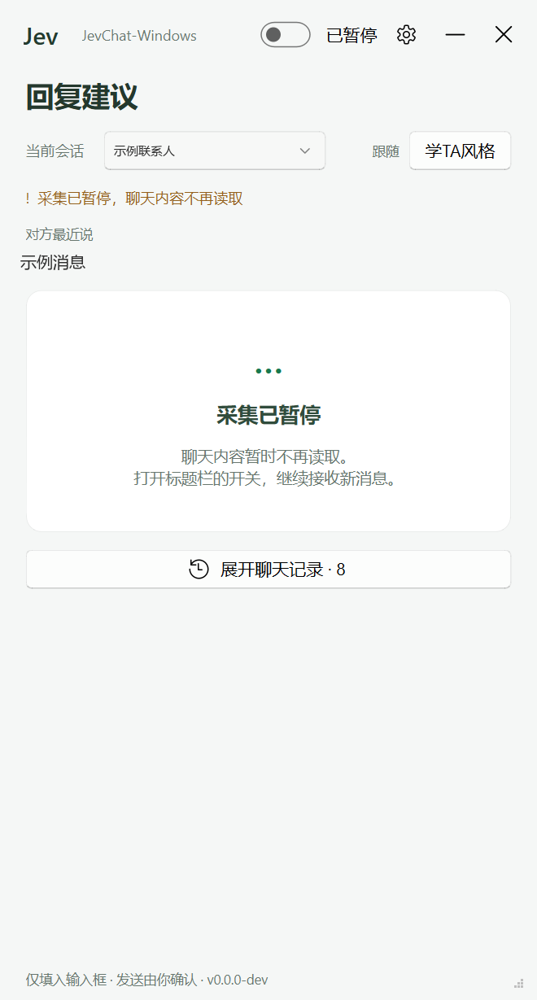
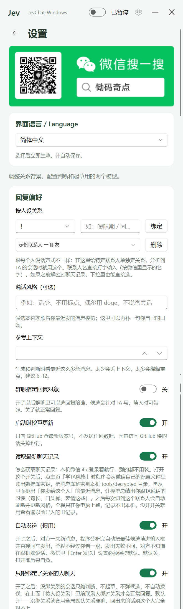

聊天不用再
憋半天
本地 OCR 看懂这一屏对话，Jev 判断对方的意图和情绪，再给出 3 条像你自己会说的话。
按人绑关系、按人学风格——对恋人、朋友、同事，说的不是同一套话。

同一个人，不同的人，说不同的话
大多数「AI 代聊」只有一套人设，回谁都是一个味儿。这里的做法是：先把人分开，再谈怎么回。
关系按人绑
每个联系人单独选关系：恋人、暧昧、追求、冷战、分手、复合。没绑关系的人只判断、不回复——宁可不说，也不乱说。
风格按人学
从本机微信库里抽「我发给 TA」的最近消息，蒸馏成句长、口头禅、表情习惯。30 天过期重学，切人自动换。
上下文按人存
每个会话独立记录、独立候选，互不串味。多会话后台轮询，谁的手机响了就分析谁，当前窗口仍走 OCR。
把「尬聊」拆成可执行的步骤
长这样
截图里的联系人名已替换为「示例联系人」，聊天内容也换成了示例消息，避免泄露真实会话。

三步开始
下载解压
从 Releases 拿 zip，解压到固定目录，双击 jev-chat-windows.exe。
配好模型
设置页填 Jev（判断）和起草模型的两把 key。博查一把 key 就能通吃判断 + 起草。
绑一个人试试
在「按人设关系」里输入微信显示名，选关系点绑定。之后对话框旁边就会出候选。
接下来要做的
这套东西不会停在「微信 + Windows」。
狗头军师
不替你说话，只在旁边拆局：TA 这句话什么意图、你哪句说错了、下一步怎么接。想自己说又怕说错时用。
iOS / Android
手机上也能用同一套「按人绑关系 + 按人学风格」，通勤路上也能接得住。
职场不冷场，情场不尬聊
该接的话接得住，该退的时候体面退。少一点「在吗」，多一点好好说话。
先把顾虑说清楚
聊天内容会上传吗？
OCR 在本机跑，识别结果只发给模型接口用于生成回复；本地库解密、风格学习全程在本机，不上传聊天记录。
会不会自己乱发消息？
默认不会。候选只填进输入框，回车由你按。只有你手动打开「自动发送（慎用）」才会自动发送，默认关闭。
为什么没绑关系就不回复？
「只跟绑定了关系的人聊天」默认开启：没绑关系的会话只做判断，不起草、不弹候选、不自动发送。避免把对 A 的话回给 B。
收费吗？
代码 MIT，免费用、随便改，别拿去卖。模型调用按各家 API 自己计费。